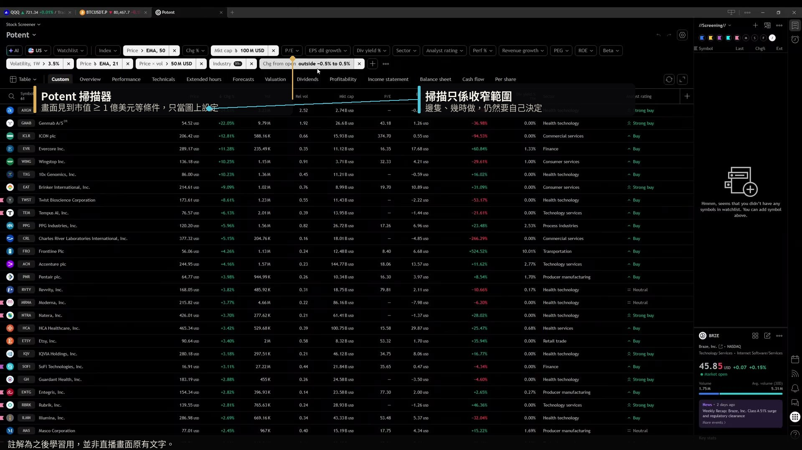
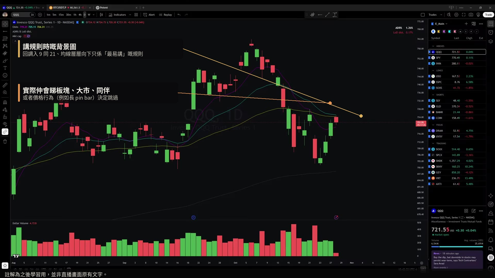

概要
規則容易寫，判斷先係佢想保留嘅部份
1:17:37 起先答掃描設定：大致仍用以前嘅條件，或會把成交額改到 1 億美元，亦過濾部份生物科技，並排除收購或合併。跟住有人問點解唔用 AI 代勞逐張圖睇。佢話掃描最重要嘅工作並唔係直接列出今日要做嘅名字，而係收窄宇宙、提供候選；真正決定邊隻、喺邊、幾時做，仍然要自己來。連觀察觀察名單、感受唔同板塊同市值角落發生緊咩事，都係過程。最易講出嚟嘅規則，可以係回調入 9 同 21 EMA，再加 9 在 21 下、21 在 50 下、50 在 150 下；但每日都會有好多呢類機會，係唔係淡每一個都賺錢，佢唔知。有時會因為板塊強、大市強或者大市在支持、同伴強，或者唔鍾意價格行為而跳過。例如昨日出現頗長嘅 pin bar，第二日嘅回調佢未必會淡。呢啲細節更難定義，亦係佢想手動做、透過翻圖訓練形態辨識嘅部份。所以佢唔想把呢啲字交俾 AI，甚至擔心會令交易變差。
畫面先見到 Potent 掃描器，之後一邊講一邊翻圖。1:24 前後停過 XYZ，只係翻圖過程，唔把呢隻當成口中 pin bar 例子。圖例冇印均線週期。
圖一
掃描器只係收窄宇宙
直播 1:18:40

原話
You still use your screening settings like the years before. I think so. I think maybe I changed it a little bit. Maybe I would like trying to change the dollar volume to like 100 million. And also I filter some biotechs out on my potential watch list. And also added this one trying to exclude the buyouts or the merger. Why don't you choose AI to help you with screening so you don't need to check the price charts one by one? The screeners are not doing the most important thing for me. The screeners is just trying to narrow down my universe, or providing me some potential candidates for my trades. So it's not actually showing me the names that I should trade today. Then I am the one who really decide which one to trade and where and when I should trade. Even though I'm not trading these names, but just by going through them, I can get a sense of what is happening right now in different corners of the markets, like in different sectors, different market caps.
你係咪仍然用幾年前嗰套掃描設定？我覺係。可能改過少少。或者我會想把成交額改到大約 1 億美元。而且我亦喺潛在觀察名單過濾走部份生物科技，又加咗一項想排除收購或者合併。點解唔用 AI 幫你掃描，就唔使一張張圖睇？掃描器對我嚟講，並冇做最重要嗰部份。掃描器只係幫我收窄宇宙，或者提供一啲潛在候選。佢其實唔係直接話俾我聽今日應該做邊隻。之後仍然係我決定做邊隻、喺邊、同幾時做。即使呢啲名字我唔會做，但只要逐隻行過，我都可以感受而家市場唔同角落、唔同板塊同市值發生緊咩事。
點樣讀
掃描係工具，唔係今日嘅交易清單。畫面見到嘅條件只當圖上設定，唔好當成完整規則表。
1 億美元係口中可能修改嘅成交額，畫面同時見到市值 ≥ 100 M USD；兩者唔好混為同一條。
圖二 · 主圖
最易講嘅規則，同佢真正會跳過嘅細節
直播 1:21:30

原話
I believe there are tons of pullback entries. Like if you just define some rules like the pullback into the 9 and 21 EMA. And maybe the 9 under 21, 21 under the 50, 50 under the 150. That is I think the easiest rules that I can come up with. And I think there will be quite a lot of opportunities every day, but does shorting every one of those is profitable? I don't know. Sometimes I will skip or avoid some trades because maybe the sector is strong. Maybe the market is strong, like the market is at the support level. Maybe the peers is strong. Or I just don't like the price actions. Let's say we got a pretty long pin bar candle yesterday. Will I short the next pullback on the next day? Maybe not. So these are the details that may be a little bit harder to define, that I would like to focus on when I'm manually doing the stuff. And also like flipping all the charts actually helps you to train your pattern recognition. I think it's also part of the learning process too. So I actually hate putting these words to AI. I think in this particular aspect of trading, AI is not going to help me, or maybe it's going to worsen my trading.
我相信回調入場多得係。如果你只係定義一啲規則，例如回調入 9 同 21 EMA，或者 9 在 21 之下、21 在 50 之下、50 在 150 之下，我覺得呢啲已經係我可以想到最易嘅規則。而每日都會有好多呢類機會，但係唔係淡每一個都會賺錢？我唔知。有時我會跳過或者避開一啲交易，可能因為板塊強，可能因為大市強，例如大市喺支持位。又或者同伴強。又或者我只係唔鍾意嗰個價格行為。譬如話昨日出咗一根頗長嘅 pin bar，第二日嘅回調我會唔會淡？或者唔會。所以呢啲細節可能更難定義，而係我手動做嘅時候想聚焦嘅部份。而且把圖全部翻一遍，其實亦幫你訓練形態辨識。我覺得呢都係學習過程。所以我其實好唔鍾意把呢啲字交俾 AI。我覺得喺交易呢一個特別嘅部份，AI 幫唔到我，或者甚至會令我嘅交易變差。
Whisper 把 peers 聽成 pierce。1:24 前後畫面一度停在 XYZ，只係翻圖，唔把呢隻當成口中 pin bar 例子。
點樣讀
最易講嘅規則可以寫低，但佢認為真正價值在於幾時跳過：板塊、大市位置、同伴，同價格行為。
pin bar 例子係口頭假設，唔好在呢幅 QQQ 或者其後翻到嘅股票上標死「就係呢根」。圖例冇印 9、21、50、150 嘅週期。
附註
注意事項
- 掃描畫面條件只當圖上文字。口中 1 億美元成交額同畫面市值過濾唔好混為同一條。
- 1:22–1:25 快速翻過 ZS、ASST、DOW、XYZ、SOFI、FIX 等，冇獨立分析點，唔做成圖冊。